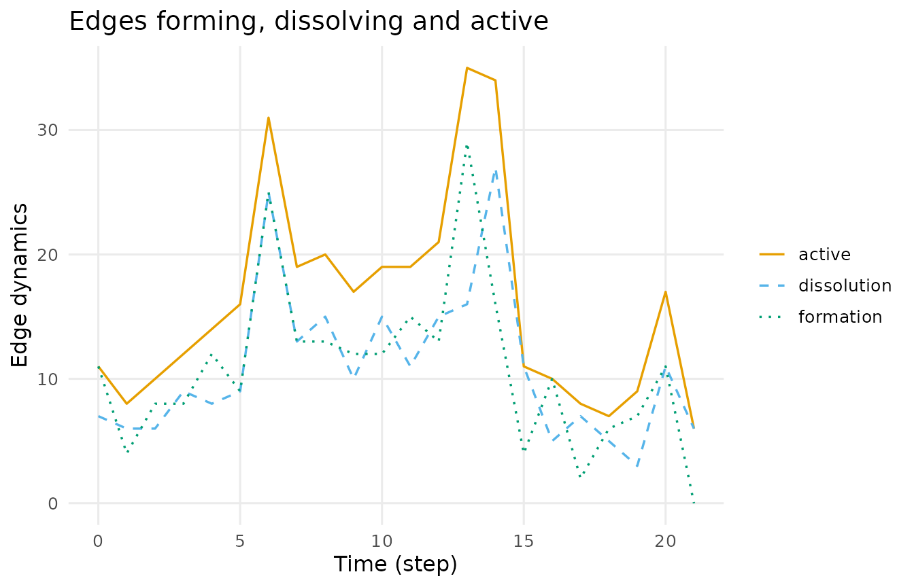
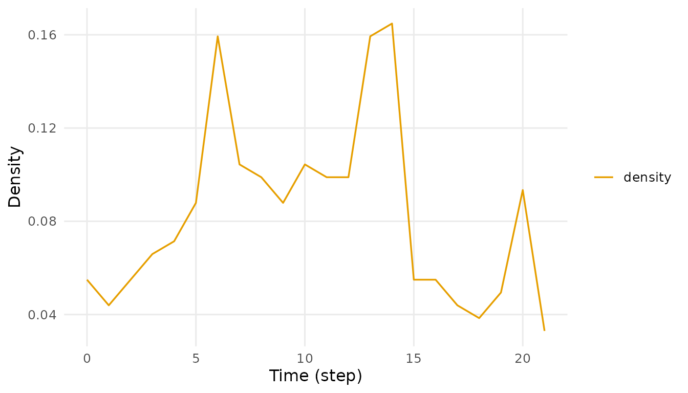
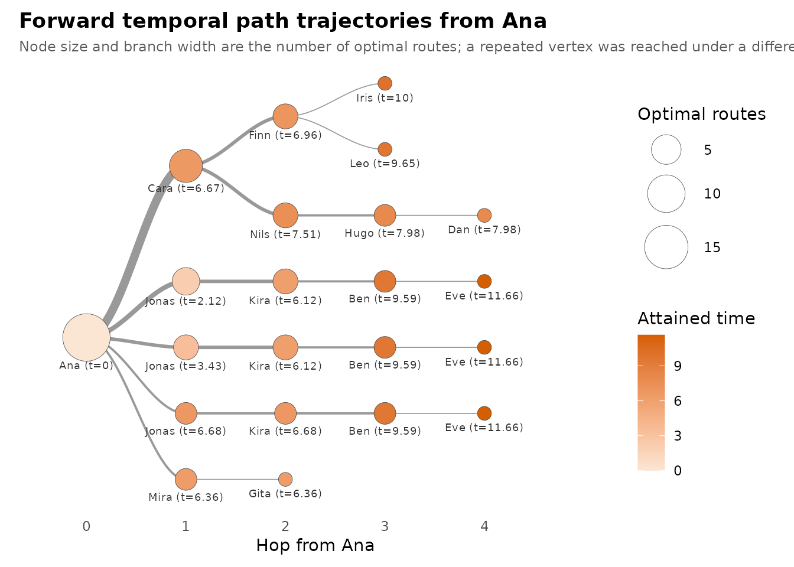
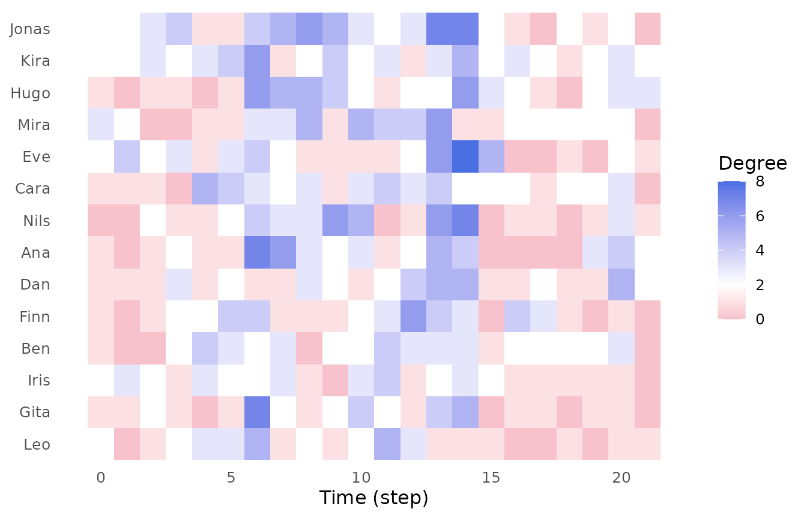

A network that knows what time it is
A static network says that two people are connected. A temporal network says when they were connected, for how long, and — the part that matters most — in which order.
That ordering is not decoration. If Ana talks to Jonas on Tuesday and Jonas talks to Eve on Wednesday, something can travel Ana → Jonas → Eve. If the same two conversations happen in the opposite order, nothing can. A flattened network scores both situations identically: two edges, one path of length two. Only one of them is real.
The usual workaround is to cut time into slices and analyse each slice as a static network. That helps, but it throws away exactly the thing that makes the data temporal: a snapshot cannot contain a chain that spans snapshots. In the classroom data below, Ana and Eve never once make contact, so no slice will ever link them — yet a time-respecting path carries Ana to Eve in four hops. Aggregate instead and you make the opposite mistake: every ordering becomes legal, and connectivity is inflated.
Dynet keeps time in the object and in every result. This vignette is the tour.
Building a network in one line
The bundled school_contacts is an interval log:
each row is one contact, with its own start and end time.
dn <- dynet(school_contacts)
dn
#> # Temporal network (interval format, directed) | a cograph netobject
#> # 14 vertices | 240 edge spells | 110 distinct pairs
#> # observed from 0 to 21.52 step, binned every 1
#>
#> from to start end duration weight
#> Jonas Dan 0.00 1.10 1.10 1
#> Gita Ana 0.14 0.98 0.84 1
#> Leo Mira 0.15 0.42 0.27 1
#> Leo Iris 0.15 0.96 0.81 1
#> Kira Ben 0.33 0.69 0.36 1
#> Leo Iris 0.38 0.50 0.12 1
#> # 234 more spells. summary() describes the network; plot() draws it.dynet() inferred the format from the column names it
found. summary() describes what it built.
summary(dn)
#> property value
#> 1 format interval
#> 2 directed yes
#> 3 vertices 14
#> 4 edge spells 240
#> 5 distinct pairs 110
#> 6 time unit step
#> 7 observed from 0
#> 8 observed to 21.52
#> 9 span 21.52
#> 10 bin width 1
#> 11 time bins 22
#> 12 mean snapshot density 0.0829
#> 13 temporal density 0.0285
#> 14 sessions none
#> 15 vertex attributes noneFourteen pupils, 240 contact spells over 110 distinct pairs, observed across about 21.5 time steps. Note the last two rows of that table: the mean snapshot density and the temporal density are not the same number, and the gap between them is the subject of this vignette.
One constructor covers the four shapes relational logs actually arrive in — interval logs, contact logs of instantaneous events, threaded logs such as forum data, and co-presence logs where sharing a group creates a tie. The companion vignette on building networks works through all four; here we stay with the one line above.
plot(dn, type = "activity")
Two commitments
Everything below rests on two promises the package makes.
Vertices are named, never numbered. You ask for
"Ana", not for vertex 1. There is no index to look up
first, and no result that hands you an integer where you expected a
person.
Every verb returns a tidy data frame. One row per
observation, with the columns you would expect. No matrices, no nested
lists, nothing that asks you to reach into an object with $
or to subset a result before it is readable.
Both are visible in a single call:
head(dyn_centrality(dn, measure = "degree"))
#> # Degree (node-level)
#> # 14 vertices | 22 time points, 1 per bin | time in step
#> # first 6 of 308 rows
#> time node measure value
#> 0 Ana degree 1
#> 0 Ben degree 1
#> 0 Cara degree 1
#> 0 Dan degree 1
#> 0 Eve degree 2
#> 0 Finn degree 1One row per node per time point, vertices named, a value
column you can plot directly. The printed header is a courtesy; the
object underneath is an ordinary data frame.
str(as.data.frame(metrics(dn, measure = "density")))
#> 'data.frame': 22 obs. of 3 variables:
#> $ time : num 0 1 2 3 4 5 6 7 8 9 ...
#> $ measure: chr "density" "density" "density" "density" ...
#> $ value : num 0.0549 0.044 0.0549 0.0659 0.0714 ...Because results are already tidy, the tidying rituals you would
normally write by hand are arguments instead. start,
end, step, window,
sessions, measure, mode — you
narrow a result by asking the verb for it, not by slicing what it
returned.
What a snapshot cannot see
Start with the graph-level view. metrics() computes a
structural measure once per time bin.
head(metrics(dn, measure = "density"))
#> # Density (graph-level)
#> # 22 time points, 1 per bin | time in step
#> # first 6 of 22 rows
#> time measure value
#> 0 density 0.05494505
#> 1 density 0.04395604
#> 2 density 0.05494505
#> 3 density 0.06593407
#> 4 density 0.07142857
#> 5 density 0.08791209
summary(metrics(dn, measure = "density"))
#> measure n mean sd min max peak_time
#> 1 density 22 0.08291708 0.03929021 0.03296703 0.1648352 14The busiest single instant links about one pair in six; on average it is closer to one in twelve. Plotted, the classroom breathes.

If those snapshots were all you had, you would conclude that this classroom is sparse and fragmented. Now ask the temporal question instead.
Time-respecting paths
A time-respecting path may only use edges whose timing runs forward.
It can wait at a vertex, but it can never travel back in time.
paths() follows every such path out of one named
vertex.
paths(dn, from = "Ana")
#> # Time-respecting paths from 'Ana', from t = 0
#> # reaches 13 of 13 other vertices | time in step
#> node reachable arrival_time attained latency n_hops n_paths
#> Ana TRUE 0.00 TRUE 0.00 0 1
#> Ben TRUE 9.59 TRUE 9.59 3 3
#> Cara TRUE 6.67 TRUE 6.67 1 1
#> Dan TRUE 7.98 TRUE 7.98 4 1
#> Eve TRUE 11.66 TRUE 11.66 4 3
#> Finn TRUE 6.96 TRUE 6.96 2 1
#> Gita TRUE 6.36 TRUE 6.36 2 1
#> Hugo TRUE 7.98 TRUE 7.98 3 1
#> Iris TRUE 10.00 TRUE 10.00 3 1
#> Jonas TRUE 2.12 TRUE 2.12 1 1
#> Kira TRUE 6.12 TRUE 6.12 2 2
#> Leo TRUE 9.65 TRUE 9.65 3 1
#> # 2 more rows. summary() aggregates them; plot() draws the tree.Four columns carry the temporal content:
-
arrival_time— the earliest clock time at which the journey can get there. It is a point on the network’s timeline, not a count of steps. -
latency— how long the journey took:arrival_timeminus the time the source became available. Ana starts at 0 here, so the two coincide; start later and they part company. -
n_hops— how many edges the journey used. Dynet optimises shortest foremost: it minimises arrival time first, then hop count among the journeys that achieve it. -
n_paths— how many distinct optimal journeys there are. Two vertices can share an arrival time and hop count and still differ in how many ways the network gets you there.
summary() aggregates the whole reachable set.
summary(paths(dn, from = "Ana"))
#> property value
#> 1 source Ana
#> 2 direction forward
#> 3 reachable 13
#> 4 reachable share 1
#> 5 median latency 7.51
#> 6 max latency 11.66
#> 7 median hops 2
#> 8 max hops 4So Ana reaches every one of the other thirteen pupils, in at most four hops — in a network where no single snapshot ever connected more than a sixth of the pairs. That is the information a snapshot-by-snapshot analysis destroys.
The result is not a property of the network alone; it is a property of the network and when you start. Ask the same question from late in the window and most of those journeys no longer exist, because the contacts that carried them have already happened.
paths(dn, from = "Ana", start = 18)
#> # Time-respecting paths from 'Ana', from t = 18
#> # reaches 5 of 13 other vertices | time in step
#> node reachable arrival_time attained latency n_hops n_paths
#> Ana TRUE 18.00 TRUE 0.00 0 1
#> Ben FALSE NA FALSE NA NA 0
#> Cara TRUE 20.68 TRUE 2.68 3 1
#> Dan TRUE 19.91 TRUE 1.91 1 1
#> Eve FALSE NA FALSE NA NA 0
#> Finn FALSE NA FALSE NA NA 0
#> Gita FALSE NA FALSE NA NA 0
#> Hugo FALSE NA FALSE NA NA 0
#> Iris FALSE NA FALSE NA NA 0
#> Jonas FALSE NA FALSE NA NA 0
#> Kira FALSE NA FALSE NA NA 0
#> Leo TRUE 20.33 TRUE 2.33 1 1
#> # 2 more rows. summary() aggregates them; plot() draws the tree.Reach also has a direction. direction = "backward"
traces who could have reached Ana rather than whom Ana can reach — the
question you want when you are tracing an exposure backwards rather than
forwards.
Seeing the journeys
plot() on a paths result draws the whole family of
optimal journeys as a trajectory tree.

Read it outward from the root. The source sits at hop 0 on the left; each step to the right is one more hop, so a vertex’s horizontal position is the number of edges its journey used. Node size and branch width both encode the number of optimal routes running through that point, and each node is labelled with the vertex name and the time the hop fires, so nothing is carried by size or colour alone.
The feature that has no static counterpart is this: a vertex
appears more than once when it was reached under a different temporal
history. Jonas shows up three times in this tree.
Those are not three different pupils and not three different places in
the graph — they are the same vertex entered at 2.12, at 3.43 and at
6.68. Each entry time leaves a different set of onward contacts still in
the future, so each one is genuinely a different starting point for the
rest of the journey. That is why paths() reported
n_paths = 3 for Ben earlier: the three optimal routes to
Ben share the vertex sequence Ana → Jonas → Kira → Ben and differ only
in when the hops fire. A flattened network would collapse all three into
one path and call the matter settled.
measure re-encodes the same tree. "time"
weights it by arrival time rather than route count, which turns the
picture into a schedule of when the reachable set fills up.
plot(journeys, measure = "time")
orientation = "vertical" turns the tree on its side for
a tall, narrow layout, min_count prunes branches carrying
fewer than that many routes, and measure = "predictability"
shades each branch by how strongly its parent commits to it.
The tree is data as well as a picture.
path_trajectories() returns it tidily, one row per tree
node, with the route as a readable string, its parent,
depth, the count of routes through it, the
branching probability given its parent, and the bare
vertex and time.
head(path_trajectories(journeys))
#> # Forward temporal trajectory tree from Ana
#> # 6 nodes, 3 hops deep, 19 routes
#> node parent
#> 1 Ana@0 <NA>
#> 2 Ana@0 -> Cara@6.67 Ana@0
#> 3 Ana@0 -> Cara@6.67 -> Finn@6.96 Ana@0 -> Cara@6.67
#> 4 Ana@0 -> Cara@6.67 -> Finn@6.96 -> Iris@10 Ana@0 -> Cara@6.67 -> Finn@6.96
#> 5 Ana@0 -> Cara@6.67 -> Finn@6.96 -> Leo@9.65 Ana@0 -> Cara@6.67 -> Finn@6.96
#> 6 Ana@0 -> Cara@6.67 -> Nils@7.51 Ana@0 -> Cara@6.67
#> depth count probability vertex time session branch
#> 1 0 19 NA Ana 0.00 <NA> 3.15
#> 2 1 7 0.3684211 Cara 6.67 <NA> 5.75
#> 3 2 3 0.4285714 Finn 6.96 <NA> 6.50
#> 4 3 1 0.3333333 Iris 10.00 <NA> 7.00
#> 5 3 1 0.3333333 Leo 9.65 <NA> 6.00
#> 6 2 3 0.4285714 Nils 7.51 <NA> 5.00A tour of the measurement verbs
Every verb takes the network first and a measure (or an
attribute) by name. Every one returns a tidy frame keyed by time, by
vertex, or by both.
dyn_centrality() — who matters, and when
At scope = "snapshot" a centrality is recomputed in
every bin, so summary() gives you each pupil’s trajectory
in one table, including when they peaked.
summary(dyn_centrality(dn, measure = "degree"))
#> node measure n mean sd min max peak_time
#> 1 Ana degree 22 2.181818 2.015095 0 7 6
#> 2 Ben degree 22 2.000000 1.234427 0 4 4
#> 3 Cara degree 22 2.227273 1.342770 0 5 4
#> 4 Dan degree 22 2.090909 1.444500 1 5 13
#> 5 Eve degree 22 2.272727 2.051290 0 8 14
#> 6 Finn degree 22 2.000000 1.661898 0 6 12
#> 7 Gita degree 22 1.727273 1.777688 0 7 6
#> 8 Hugo degree 22 2.318182 1.861550 0 6 6
#> 9 Iris degree 22 1.772727 1.066004 0 4 11
#> 10 Jonas degree 22 2.863636 2.076982 0 7 13
#> 11 Kira degree 22 2.636364 1.255292 1 6 6
#> 12 Leo degree 22 1.636364 1.432462 0 5 6
#> 13 Mira degree 22 2.272727 1.695423 0 6 13
#> 14 Nils degree 22 2.181818 2.174229 0 7 14
plot(dyn_centrality(dn, measure = "degree"), type = "heatmap", palette = "okabe")
At scope = "temporal" the measure is computed on
time-respecting paths across the whole window instead — one value per
vertex, not one per bin. Temporal closeness is the inverse of
mean forward latency over the vertices a person reaches, so a high score
means “gets to the rest of the class quickly” rather than “has many
neighbours right now”.
head(dyn_centrality(dn, measure = "closeness", scope = "temporal"))
#> # Closeness (node-level)
#> # 14 vertices | time in step
#> # first 6 of 14 rows
#> # computed on time-respecting paths across the whole window
#> node measure value
#> Ana closeness 0.1313662
#> Ben closeness 0.1815896
#> Cara closeness 0.1931075
#> Dan closeness 0.2230994
#> Eve closeness 0.2616221
#> Finn closeness 0.1644945
metrics() — graph-level structure over time
Density is one of forty available measures.
temporal_density is a useful contrast: it discounts pairs
that are adjacent in a snapshot but never in a time-respecting
order.
head(metrics(dn, measure = "temporal_density"))
#> # Temporal density (graph-level)
#> # 22 time points, 1 per bin | time in step
#> # first 6 of 22 rows
#> time measure value
#> 0 temporal_density 0.02379121
#> 1 temporal_density 0.01307692
#> 2 temporal_density 0.01664835
#> 3 temporal_density 0.02785714
#> 4 temporal_density 0.01697802
#> 5 temporal_density 0.02357143
events() — ties appearing and disappearing
Structure is a stock; formation and dissolution are the flows that produce it.
burstiness() — is contact regular or clumped?
Human contact is rarely Poisson. Burstiness compares the variability
of the gaps between a vertex’s events against the exponential reference:
1 is the bursty limit, 0 is Poisson,
-1 is perfectly regular.
head(burstiness(dn))
#> # Burstiness (node-level)
#> # 14 vertices | time in step
#> # first 6 of 42 rows
#> # 1 is the bursty limit, 0 is the Poisson reference, -1 is regular
#> node measure value
#> Ana burstiness 0.24575324
#> Ben burstiness 0.03288611
#> Cara burstiness -0.05610924
#> Dan burstiness -0.05061772
#> Eve burstiness 0.09217906
#> Finn burstiness 0.02938507
durations() — how long ties actually last
By default durations() counts events per pair;
measure = "mean" gives the average length of a spell, and
unit moves the question from pairs to spells or to vertex
activity.
head(durations(dn, measure = "mean"))
#> # Relationship duration (edge-level)
#> # time in step
#> # first 6 of 110 rows
#> # durations in step
#> from to measure value
#> Ana Cara mean 0.100
#> Ana Dan mean 0.340
#> Ana Gita mean 0.422
#> Ana Iris mean 0.500
#> Ana Jonas mean 0.585
#> Ana Kira mean 0.110
mixing() — who connects across which groups
Mixing needs vertex attributes, so this one uses the forum data,
where forum_people supplies a role for each
participant. forum_posts is a threaded log: a post
keeps its tie alive until the thread falls silent.
fn <- dynet(forum_posts, thread = "thread", nodes = forum_people)
fn
#> # Temporal network (threaded format, directed) | a cograph netobject
#> # 20 vertices | 241 edge spells | 172 distinct pairs
#> # observed from 0 to 54.96387 days, binned every 1
#> # vertex attributes: role, achievement
#>
#> from to start end duration weight thread
#> student_14 student_05 0.0000000 2.296969 2.296969 1 thread_47
#> student_10 student_05 0.7257216 2.296969 1.571247 1 thread_47
#> teacher_A student_09 0.8559934 3.235993 2.380000 1 thread_11
#> student_04 student_05 1.1715344 2.296969 1.125435 1 thread_47
#> student_02 student_09 1.2382611 3.235993 1.997732 1 thread_11
#> student_06 teacher_A 1.9797595 3.235993 1.256234 1 thread_11
#> # 235 more spells. summary() describes the network; plot() draws it.
mixing(fn, attribute = "role", step = 60)
#> # Mixing by role (graph-level)
#> # 1 time points, 60 per bin | time in days
#> # measures: Facilitator -> Facilitator, Student -> Facilitator, Teacher -> Facilitator, Facilitator -> Student, Student -> Student, Teacher -> Student, Facilitator -> Teacher, Student -> Teacher, Teacher -> Teacher
#> # active binary-dyad counts between vertex groups per time bin
#> time measure value from_group to_group
#> 0 Facilitator -> Facilitator 0 Facilitator Facilitator
#> 0 Student -> Facilitator 3 Student Facilitator
#> 0 Teacher -> Facilitator 0 Teacher Facilitator
#> 0 Facilitator -> Student 4 Facilitator Student
#> 0 Student -> Student 136 Student Student
#> 0 Teacher -> Student 12 Teacher Student
#> 0 Facilitator -> Teacher 1 Facilitator Teacher
#> 0 Student -> Teacher 16 Student Teacher
#> 0 Teacher -> Teacher 0 Teacher TeacherA step wider than the observation window collapses the
counts into a single bin; leave it out and you get the same table once
per bin, which is what you want when you are asking whether cross-role
contact changes over the term.
Where to go next
-
vignette("building-networks", package = "Dynet")— the four log formats in detail, node attributes, observation windows, sessions, and the editing verbs (add_ties(),set_observations(),induce_subgraph()and friends). -
?pathsand?plot_path_trajectories— the full traversal semantics:traversal_timefor a cost charged per hop, session-bounded search,as.data.frame(x, what = "steps")for the reconstructed routes themselves, and the remaining trajectory-tree controls. -
?dyn_centralityand?metrics— the complete measure catalogues. Passing a measure that does not exist prints the list of ones that do. -
projection(),pshifts(),snapshots()andcollapse_network()cover two-mode projection, participation shifts, per-bin edge lists and static aggregation.
browseVignettes("Dynet") lists everything installed
alongside this one.